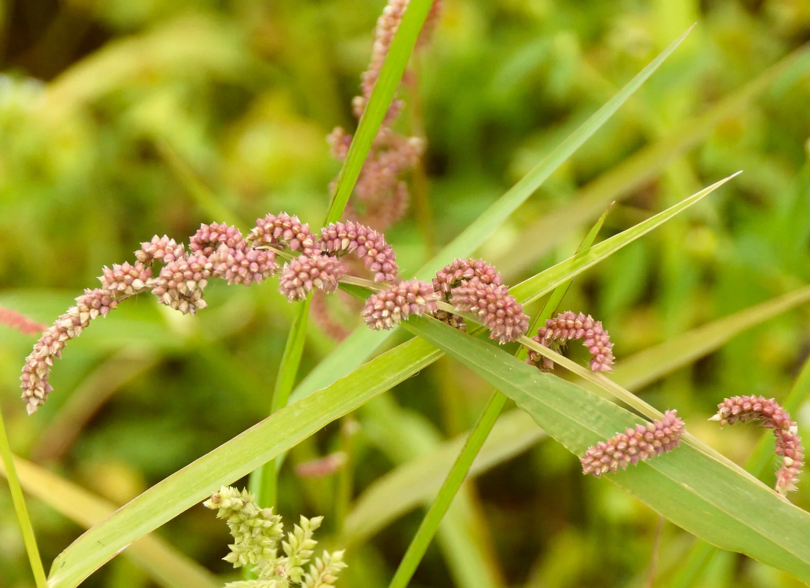
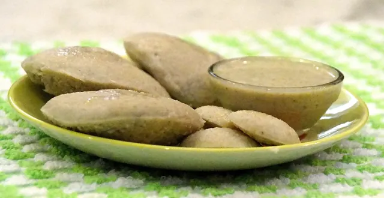
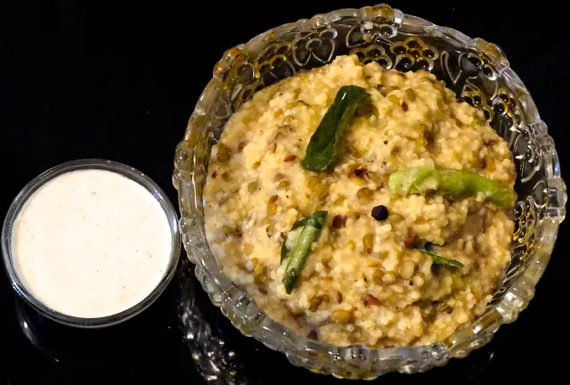

Small grains.
A world of
possibilities.
Discover the five Siridhanya millets, familiar recipes, and a fresh way to look at everyday food.
Rediscover the
goodness of
Siridhanya.
Foxtail, Browntop, Barnyard, Kodo, and Little millet. Get to know the five grains at the heart of Millets Zone.
From a simple bowl of rice to warm pongal and soft idli, explore familiar foods with a different grain.

Five grains.
Each with its own story.
Learn their names, take a closer look, and find a place to start exploring.

Foxtail
Korralu · Kangni

Browntop
Andu Korralu

Barnyard
Oodhalu · Jhangora

Kodo
Arikalu · Kodra

Little
Samelu · Kutki
Known together as Siridhanya. Explore the names and information in the original Millets Zone collection.
Familiar favourites.
A millet twist.

Millet idli
Ingredients and preparation notes for Kodo and Barnyard millet idli.
Millet dosa
The source recipe for Kodo millet set dosa with poha, black gram and fenugreek.

Millet pongal
A Foxtail millet pongal recipe with split mung, cumin, pepper and curry leaves.
Good food starts
with curiosity.
Explore cooking notes, answers to common questions, and the original learning collection.
Let’s start with
the simple things.
A few helpful answers before you head into the kitchen.
More questions, more answers